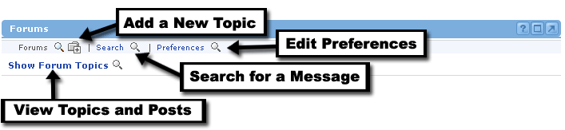
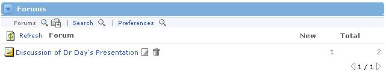
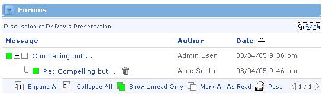

Using Forums
The Discussion Forums Channel is a forum for the users associated with the current offering. A discussion board (known also by various other names such as discussion group, discussion forum, message board, and online forum) is a general term for any online "bulletin board" where you can leave and expect to see responses to messages you have left.
The Forums Channel consists of two main elements: Topics and Messages. All messages must be posted within a topic. Therefore, topics serve as a means to group messages by a certain subject.

Topics
A topic must first be created (by someone who has permissions to do so) before anyone can post a message.
To create a topic, simply follow these steps:
- Click the Add icon at the top of the channel.
- Enter the name of this particular forum Topic.
- Click the OK button.
- The new Topic will now appear in the channel when a user clicks the Show Forum Topics link.

Topics can be edited or deleted at any time by users who have appropriate permissions. To do so, first click the Show Forum Topics link in the default channel view. Next, locate the desired forum topic and click on the Edit or Delete icon, respectively. Keep in mind that deleting a Topic will also delete all messages within that topic.

Posting a Message
After a Topic has been created, messages can be posted by anyone who has the appropriate permissions. To post a message to a specific Topic, follow these steps:
- Click on the topic name where the message should appear.
- At the bottom of the channel, several buttons appear. Click the Post button, signified by a letter and envelope icon.

The message form now appears, to begin entering your post:
- Type a subject for the message.
- The From field automatically defaults to the user who is currently logged in.
- If there are attachments to include, enter the path to the files or click the Browse button to navigate to the appropriate files.
- Type the message text in the Message field. If you type a URL into your message body, it will automatically link users to that website in a new window.
- Click the Spell Check link to check the spelling of the text within the body of your message.
- When the message is finished, click the OK button at the bottom of the form.
- The message has now been posted.

Viewing and Replying to a Message
Viewing a message is easy. Follow these steps:
- The columns to the right of each topic display how many unread (New) and total messages exist in each topic.
- Click on a topic to access these messages.
- Messages are grouped according to subject. Any replies to the first message appear below it.
- A box appears to the left of each message. If the box is green, this message has not yet been read. If the box is white, the currently logged-in user has already viewed the message.
- If a message has replies associated with it, there will be a plus or minus button next to the parent message. Click this button to expand or collapse the message tree.
- To view a message, click on the message.
- To delete a message (if appropriate permissions are available), click the Delete icon button to the right of the message.